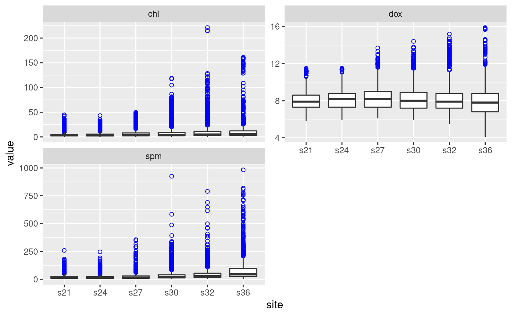

A simple extension or subclass of the "data.frame" class for typical
“discrete” water quality monitoring programs that examine phenomena
on a time scale of days or longer. It requires water quality data to be in a
specific “long” format, although a generating function
wqData can be used for different forms of data.
Objects can be created by calls of the form
new("WqData", d), where d is a data.frame. d should
have columns named time, site, depth, variable, value of class
"DateTime", "factor", "numeric", "factor", "numeric", respectively.
showClass("WqData")
#> Class "WqData" [package "wql"]
#>
#> Slots:
#>
#> Name: .Data names row.names
#> Class: list character data.frameRowLabels
#>
#> Name: .S3Class
#> Class: character
#>
#> Extends:
#> Class "data.frame", directly
#> Class "list", by class "data.frame", distance 2
#> Class "oldClass", by class "data.frame", distance 2
#> Class "vector", by class "data.frame", distance 3
# Construct the WqData object sfb as shown in the wqData examples.
sfb <- wqData(sfbay, c(1, 3, 4), 5:12, site.order = TRUE, type = "wide",
time.format = "%m/%d/%Y")
# Summarize the data
summary(sfb)
#> time site depth variable
#> Min. :1985-01-23 s21:23933 Min. : 0.500 sal :23172
#> 1st Qu.:1993-04-15 s24:15348 1st Qu.: 3.000 temp :23156
#> Median :1996-06-12 s27:18122 Median : 6.000 chl :22063
#> Mean :1996-07-24 s30:20445 Mean : 6.836 spm :16463
#> 3rd Qu.:2000-07-13 s32:16905 3rd Qu.:10.000 dox :15505
#> Max. :2004-12-14 s36: 7973 Max. :20.000 nox : 807
#> (Other): 1560
#> value
#> Min. : 0.01
#> 1st Qu.: 7.50
#> Median : 13.90
#> Mean : 17.78
#> 3rd Qu.: 23.00
#> Max. :983.00
#>
# Create boxplot summary of data
plot(sfb, vars = c("chl", "dox", "spm"), num.col = 2)

# Extract some of the data as a WqData object
sfb[1:10, ] # first 10 observations
#> time site depth variable value
#> 1 1985-01-23 s21 1 chl 5.6
#> 2 1985-01-23 s21 2 chl 3.4
#> 3 1985-01-23 s21 6 chl 3.1
#> 4 1985-01-23 s21 12 chl 3.4
#> 5 1985-01-23 s24 1 chl 6.2
#> 6 1985-01-23 s24 2 chl 5.6
#> 7 1985-01-23 s24 9 chl 3.3
#> 8 1985-01-23 s30 1 chl 1.7
#> 9 1985-01-23 s30 2 chl 0.9
#> 10 1985-01-23 s30 14 chl 1.6
sfb[sfb$depth == 20, ] # all observations at 20 m
#> time site depth variable value
#> 6887 1993-01-26 s21 20 chl 0.80
#> 11082 1996-02-01 s21 20 chl 0.60
#> 13830 1997-11-06 s21 20 chl 1.90
#> 26826 1996-02-01 s21 20 dox 8.00
#> 29573 1997-11-06 s21 20 dox 7.60
#> 38398 1993-01-26 s21 20 spm 17.00
#> 42933 1996-02-01 s21 20 spm 9.00
#> 45629 1997-11-06 s21 20 spm 10.00
#> 55760 1987-05-22 s21 20 sal 31.24
#> 55927 1987-10-01 s21 20 sal 32.07
#> 62090 1993-01-26 s21 20 sal 26.74
#> 66825 1996-02-01 s21 20 sal 28.99
#> 69573 1997-11-06 s21 20 sal 31.52
#> 78893 1987-05-22 s21 20 temp 14.90
#> 79060 1987-10-01 s21 20 temp 16.18
#> 85225 1993-01-26 s21 20 temp 11.43
#> 89960 1996-02-01 s21 20 temp 11.48
#> 92708 1997-11-06 s21 20 temp 15.97
#> 101482 1997-11-06 s21 20 nox 13.39
#> 102288 1997-11-06 s21 20 nhx 5.35